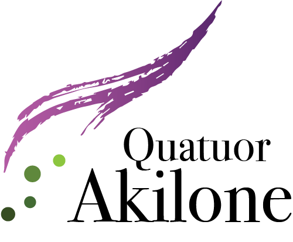

Démonstration pour le Quatuor Akilone
Un seul jeu de contenus, trois façons de le lire
Vos programmes sont saisis une fois. Chacune de vous les envoie aux programmateurs qu'elle suit, qui les découvrent sur une page faite pour décider. Le soir du concert, votre public les lit dans la salle.
Diffusion
Sur ordinateurLe tableau de bord du quatuor : Élise pilote et voit tout, Magdalena, Perrine et Lucie suivent chacune leurs contacts. Campagnes, liens personnels, qui a ouvert quoi, qui demande un contact.
Ouvrir la vue diffusion →Programmateur
Téléphone ou ordinateurLa page qu'un directeur de festival reçoit à son nom : vos programmes, des vidéos inédites, l'épisode, le kit, et un bouton pour vous écrire.
Voir comme un programmateur →Spectateur
Téléphone, par QR codeDeep in the Forest, le soir du concert : les clés d'écoute de Dvořák, ce qu'il faut guetter dans chaque pièce, en français, en anglais ou en allemand.
Ouvrir la page spectateur →La démonstration en trois gestes
- Ouvrez la vue diffusion sur votre ordinateur.
- Sur le tableau de bord, scannez le QR code de Claire Vasseur avec votre téléphone : vous voilà programmatrice.
- Ouvrez un programme, lancez la vidéo, touchez « Je suis intéressé ». Regardez l'ordinateur.
Le QR code de salle.
Scannez-le pour lire Deep in the Forest comme un spectateur, dans n'importe quelle salle de la tournée.
Démonstration réalisée par Double Dièse. Les programmes, l'équipe et la presse sont reconstitués à partir de sources publiques (festivals, labels, presse) ; les textes de présentation sont des brouillons à valider avec le quatuor. Les programmateurs, leurs structures et toutes les statistiques sont fictifs. Les éléments marqués V2 arrivent avec la seconde version.